Skærmbilleder og videoer
Skærmbilleder
Se Record Picker i brug på iPhone, iPad og Apple Watch.
Kommer i 1.9
Record Picker 1.9 · Dagens plade
Record Picker 1.9 introducerer Dagens plade: en aktuel og privat anledning til at genopdage en plade, du allerede ejer.
En aktuel anledning til at genopdage en plade, du allerede ejer.
- Bekræftede musiknyheder, mærkedage og valgfrie koncerter i nærheden matches med din samling udelukkende på din enhed.
- Hvert forslag forklarer, hvorfor det blev valgt, og henviser til en dateret kilde. Nyheder fra ønskelisten holdes adskilt fra plader, du kan afspille.
- Valgfrie private påmindelser, relevansfeedback og Dagens plade på Apple Watch hjælper med at holde forslagene nyttige. Din samling sendes aldrig til nyhedstjenesten.
Record Picker 1.8
Record Picker 1.8
Record Picker 1.8 gør samlingens datakvalitet konkret og handlingsklar.
iPhone · Record Picker 1.8
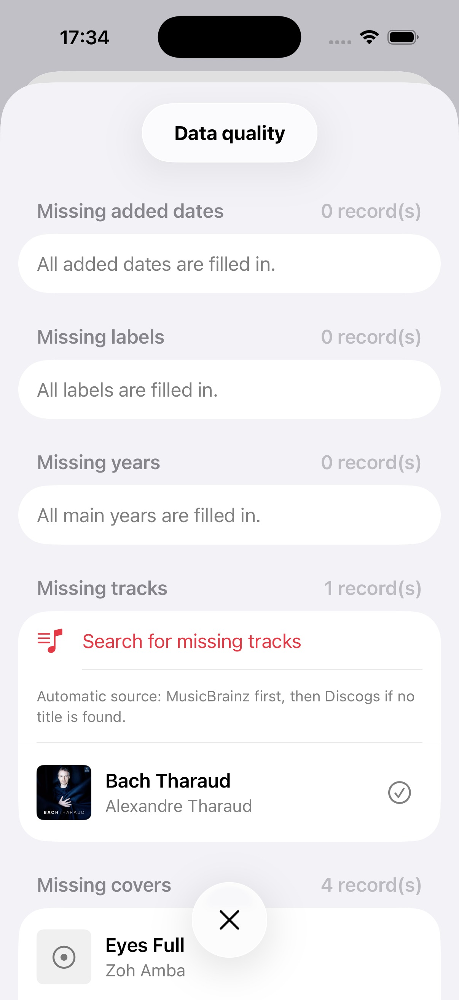

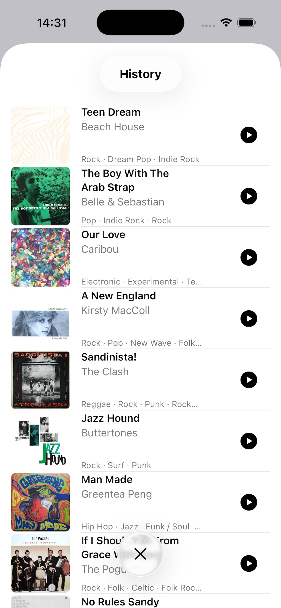
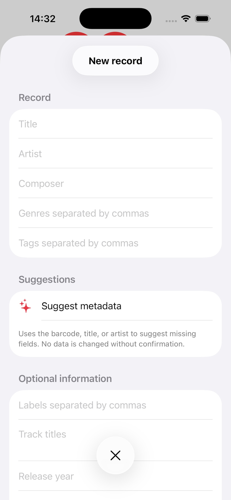
iPad · Record Picker 1.8


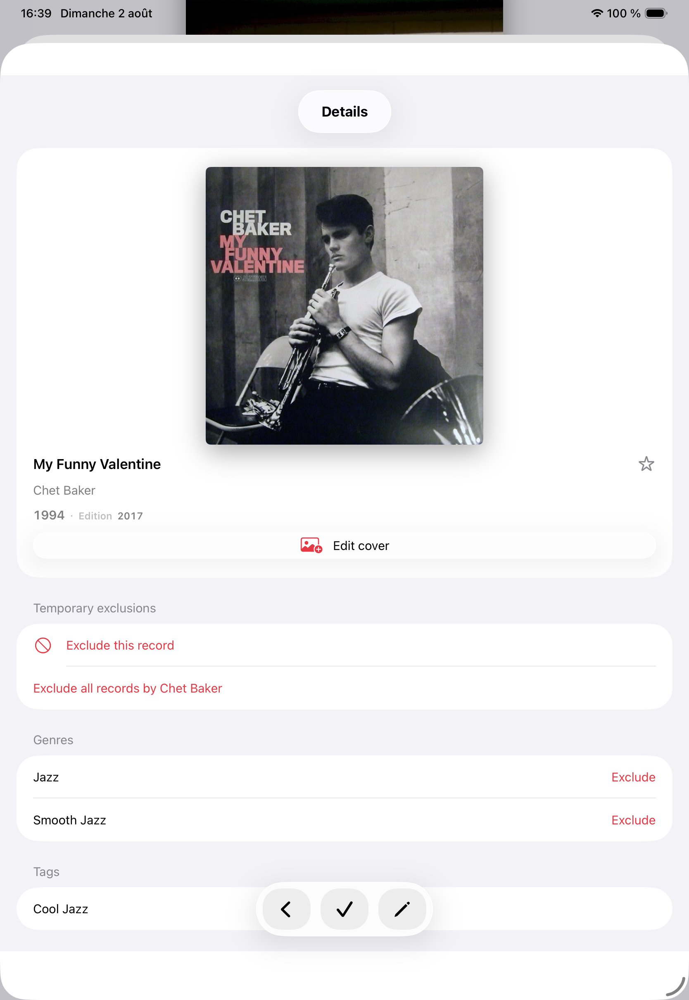
Mac · Record Picker 1.8
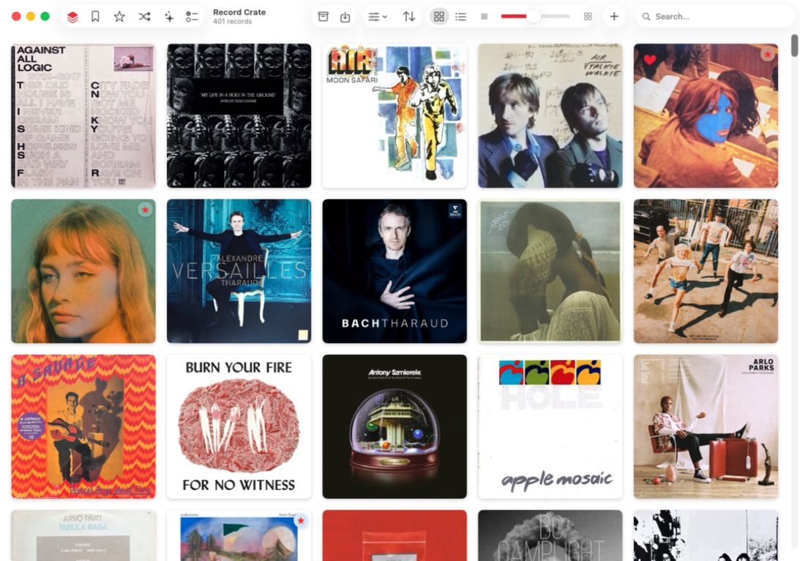
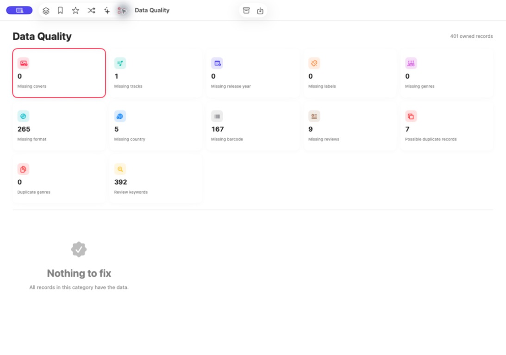
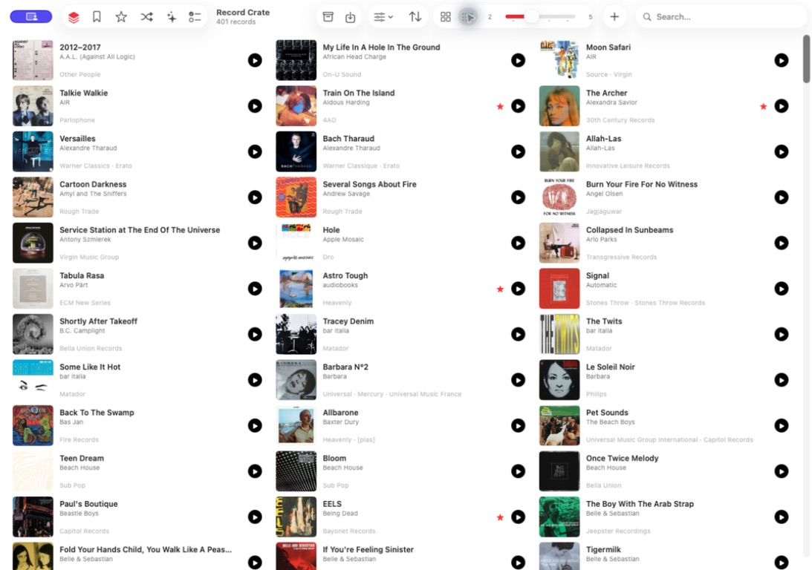
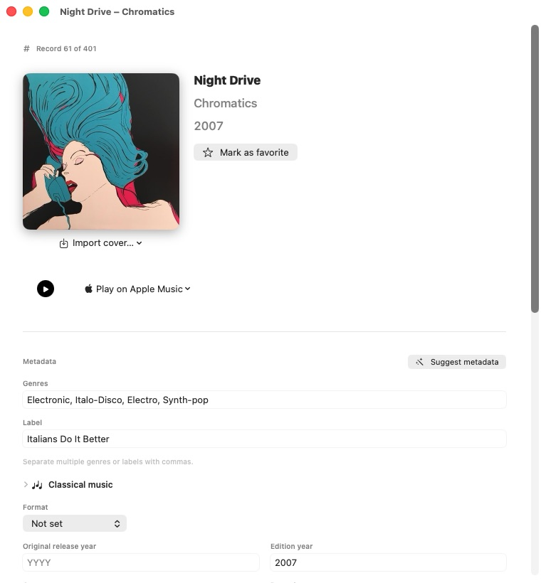
Videoer
App-forhåndsvisninger
To App Store-videoforhåndsvisninger viser valget, pladekassen og appens vigtigste bevægelser.
iPhone
iPhone
De vigtigste mobilvisninger, fra første import til det animerede valg.

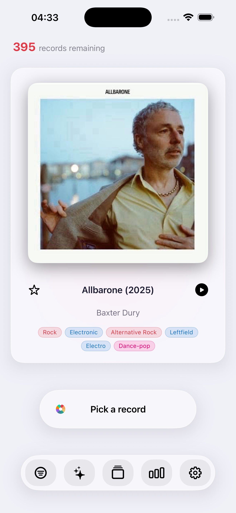


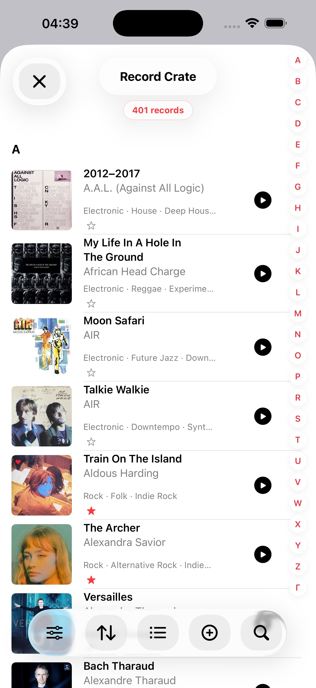

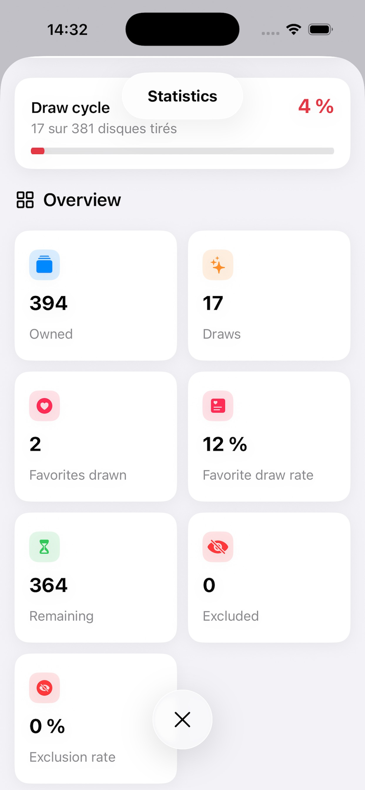

iPad
iPad
Bredere visninger til valg, kasse og filtre.

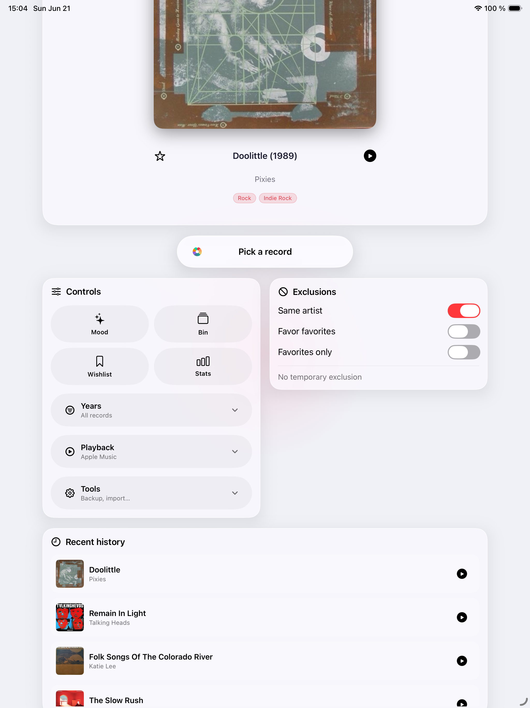
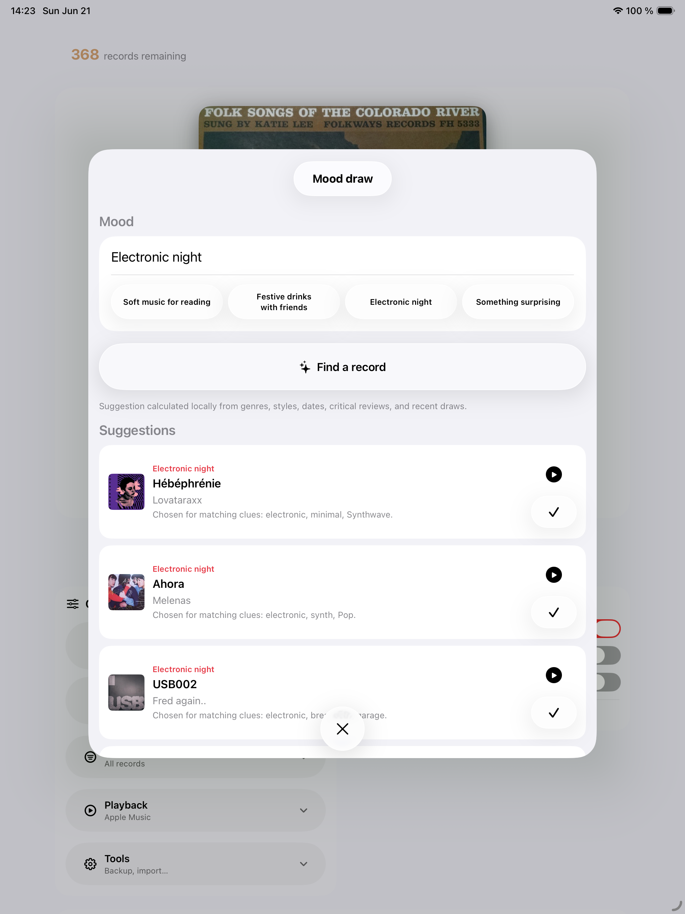

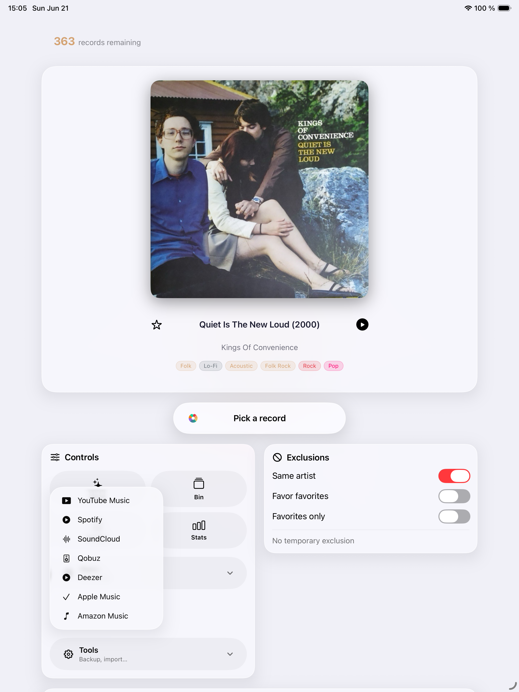
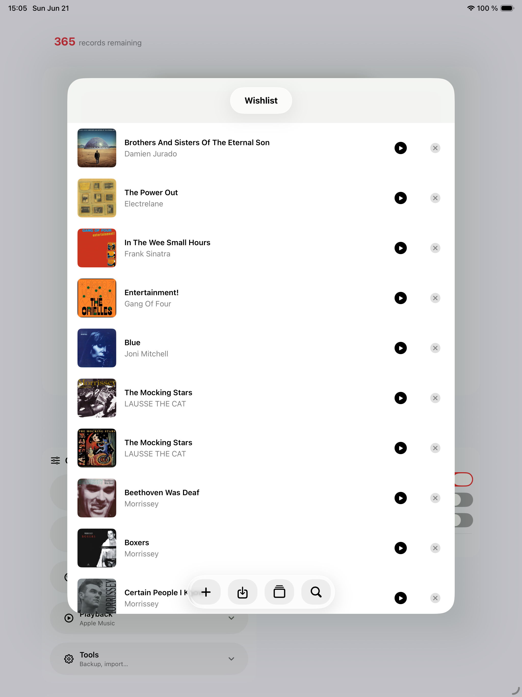